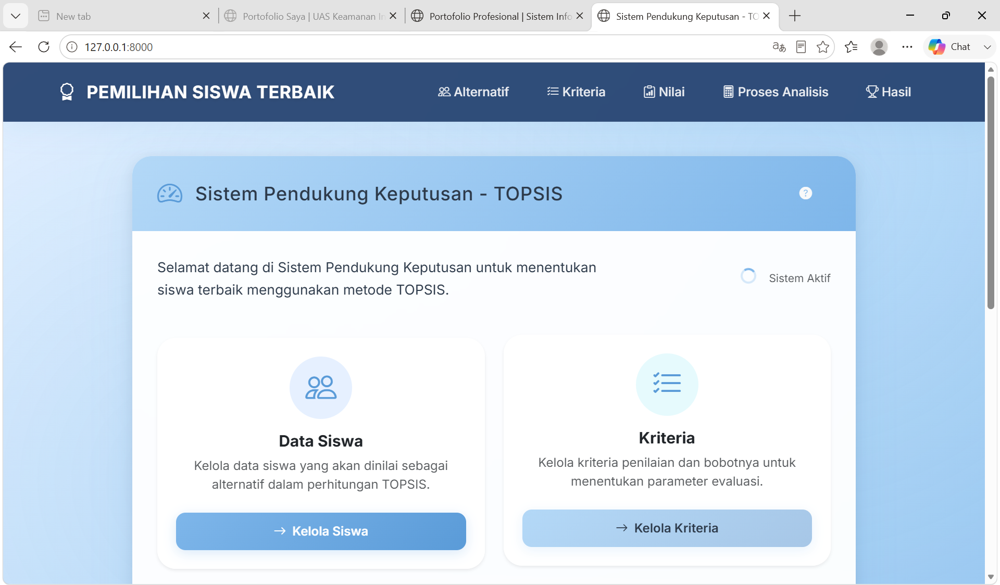
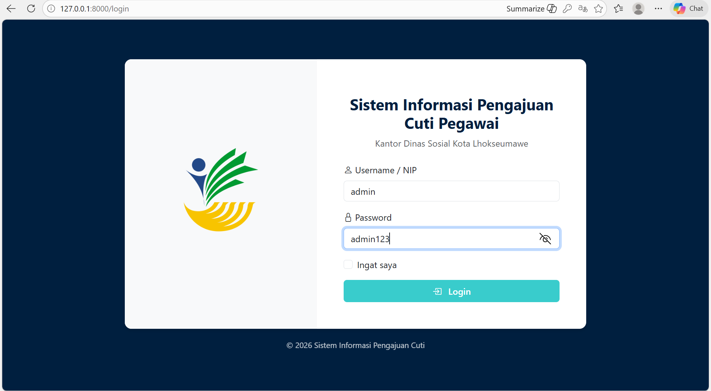

Tentang Saya
Saya adalah mahasiswa Sistem Informasi yang berfokus pada pengembangan aplikasi web, desain antarmuka dan pengalaman pengguna (UI/UX), serta implementasi sistem pendukung keputusan. Saya memiliki ketertarikan dalam membangun aplikasi yang efisien, mudah digunakan, dan memberikan solusi terhadap kebutuhan pengguna melalui pemanfaatan teknologi informasi.
Proyek Unggulan

Desain UI/UX Aplikasi E-Commerce Berbasis Mobile
Merancang antarmuka (UI) dan pengalaman pengguna (UX) aplikasi e-commerce berbasis mobile yang berfokus pada kemudahan navigasi, tampilan yang menarik, serta pengalaman berbelanja yang nyaman bagi pengguna.

Sistem Pendukung Keputusan Siswa Terbaik Menggunakan Metode TOPSIS Berbasis Web
Membangun sistem pendukung keputusan berbasis web untuk membantu proses pemilihan siswa terbaik menggunakan metode TOPSIS sehingga menghasilkan penilaian yang objektif, akurat, dan transparan berdasarkan berbagai kriteria.

Sistem Informasi Pengajuan Cuti Pegawai DINSOS Berbasis Web
Mengembangkan sistem informasi berbasis web untuk mempermudah proses pengajuan, persetujuan, dan pengelolaan cuti pegawai di Dinas Sosial secara lebih cepat, terstruktur, dan terdokumentasi.